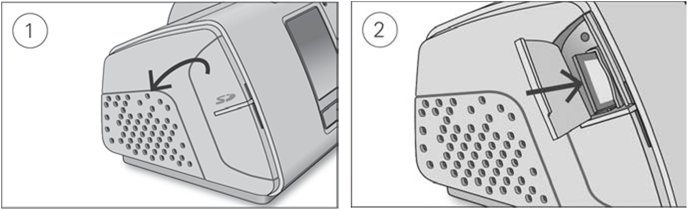

9. Therapy Data
Your AirSense 10 device records your therapy data for you and your care provider so that your therapy can be reviewed and adjusted if required.
Therapy data is recorded by the device and transferred to your care provider either wirelessly, if a wireless network is available, or via an SD card.
Data transmission
Your AirSense 10 device has the capability of wireless communication so that your therapy data can be transmitted to your care provider to improve the quality of your treatment.
This is an optional feature and will only be available if you choose to benefit from it and if a wireless network is available. Wireless communication also allows your care provider to update your therapy settings in a more timely manner or upgrade your device software to help ensure you receive the best therapy possible.
Therapy data is usually transmitted after therapy has stopped. To help ensure that your data is
transferred, leave your device connected to the mains power at all times and make sure it is not in
Airplane Mode .
.
Notes
- Therapy data might not be transmitted if the device is used outside of the country or region of purchase.
- Wireless communication depends on network availability.
- Devices with wireless communication might not be available in all regions.
- If therapy data is not being transmitted, make sure the device is placed where there is wireless coverage (e.g. on a bedside table, not in a drawer or on the floor).
SD card
An alternative way for your therapy data to be transferred to your care provider is via the SD card. Your care provider may ask you to send the SD card by mail or to bring it in.
When instructed by your care provider, remove the SD card. Do not remove the SD card while the SD light is flashing, as data is being written to the card.
To remove the SD card

- Open the SD card cover.
- Push in the SD card to release it, then remove it from the device. Place the SD card in the protective folder and send it back to your care provider.
For more information on the SD card, refer to the SD card protective folder provided with your device.
Note: The SD card should not be used for any other purpose.